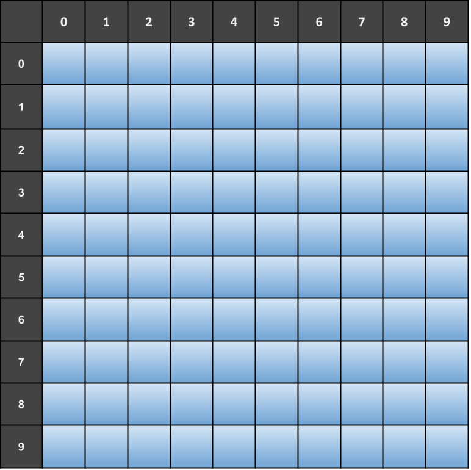

Exercício Programa - Batalha Naval Simplificada
Este EP pode ser feito individualmente ou em duplas e deve utilizar o github para registrar o histórico do código e para fazer a entrega (com contribuições de ambos os membros, no caso de duplas).
Caso faça em dupla, defina quais exercícios cada integrante ficará responsável.
Caso faça individualmente, ainda é necessário utilizar o github e fazer commits ao longo do desenvolvimento do projeto.
Para exercitar nossas habilidades com programação, vamos desenvolver o jogo Batalha Naval.
Nesse jogo, o objetivo do jogador é tentar afundar todos os navios inimigos. É preciso posicionar estrategicamente os navios no começo do jogo e contar com a sorte para afundar os navios do adversário antes dele afundar os seus.
O jogo
- O primeiro passo do jogo é posicionar um total de
10embarcações de diversas posições em um grid de10por10.

- Nesta versão do jogo trabalharemos com
4tipos de embarcações diferentes. Cada tipo possui um tamanho, que representa quantos espaços do grid ele ocupa. Veja as embarcações e suas descrições a seguir:


Você deve implementar uma versão para terminal (console) do jogo, ou seja, usando print e input para interagir com o usuário por meio de texto.
Para te auxiliar nessa tarefa, foram criados exercícios no PrairieLearn que te ajudarão a implementar as funções necessárias para o jogo.
Desenvolvimento do projeto
- Crie um repositório público no github para o seu projeto e adicione sua dupla caso haja.
- Cada exercício feito com sucesso no PrairieLearn deve ser adicionado ao repositório em um commit separado no mesmo dia. Dica: crie um arquivo para adicionar essas funções. A cada modificação nesse arquivo, faça um novo commit. Assim, a evolução do programa fica registrada.
- As funções enviadas no PrairieLearn devem ser utilizadas pelo seu programa no EP2. Faça um outro arquivo para o programa que será responsável pela impressão em tela e validação de entrada de dados.
Leia também a rubrica atentamente, pois ela irá te ajudar a entender o que precisa ser feito.
Rubrica
A tabela a seguir apresenta os requisitos esperados e seus respectivos conceitos associados para os objetivos de aprendizagem desenvolver de programas de computador e identificar e desenhar estratégias algorítmicas computacionais. Esta tabela deve ser considerada em conjunto com a tabela do objetivo atuar em uma equipe autogerenciada de desenvolvimento.
Conceito I
Não entregou
Conceito D
Não submeteu com sucesso no PrairieLearn ou não fez o commit de alguma das funções a seguir:
- Define posições
- Preenche frota
- Faz jogada
Conceito C
Submeteu com sucesso no PrairieLearn E fez o commit das funções a seguir:
- Define posições
- Preenche frota
- Faz jogada
Conceito B
Atingiu o conceito C E submeteu com sucesso no PrairieLearn E fez o commit das funções a seguir:
- Posiciona frota
- Afundados
Conceito A
Atingiu o conceito B E submeteu com sucesso no PrairieLearn E fez o commit das funções a seguir:
- Posição válida
- Pergunta posicionamento da frota
- Jogadas do jogador
- Jogadas do oponente
Conceito A+
Atingiu o conceito A e existem exatamente 2 arquivos no repositório (um para as funções e outro para o código do jogo. Além disso, as funções estão sendo importadas do arquivo que contém as definições das funções).
A tabela a seguir apresenta a rubrica do objetivo atuar em uma equipe autogerenciada de desenvolvimento.
| Conceito | Descrição |
|---|---|
| I | Não entregou. |
| D | Não possui nenhum commit próprio e nenhuma evidência de trabalho em grupo. |
| C | O grupo enviou todo o código de uma vez para o git (em um ou poucos commits enviados em um intervalo curto de tempo). |
| B | Todos os membros do grupo enviaram commits com partes do código, mas a evolução do código é artificial. |
| A | O grupo fez bom uso do git, enviando commits a cada funcionalidade implementada ou bug corrigido. Os commits são distribuídos ao longo de alguns dias, mostrando a evolução do trabalho. |
O conceito final do EP2 será dado pelo menor entre os conceitos obtidos para cada objetivo acima. Ou seja, se você obtiver conceito C no primeiro objetivo e A no segundo, o conceito final será C. Se você obtiver conceito A+ no primeiro objetivo, mas não possuir nenhum commit e nenhuma outra evidência de trabalho em grupo (conceito D), seu conceito final será D.
Entrega 27/10 até 23:59
Será considerado o código enviado para o github até a data de entrega.
O endereço do seu repositório deve ser enviado pelo Blackboard. Não façam commits após a data de entrega, pois será considerado como atraso.
Importante: Caso algum integrante da dupla esqueça de enviar o endereço do repositório, será descontado conceito da nota final do projeto.